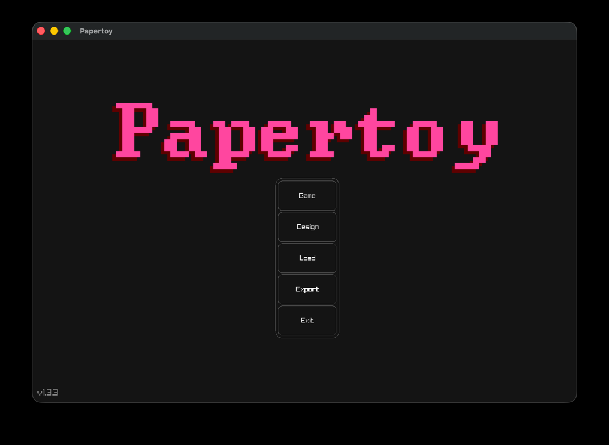
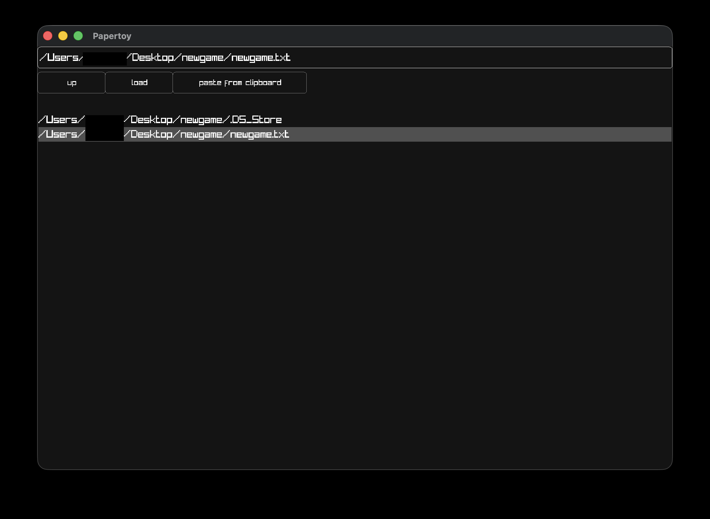
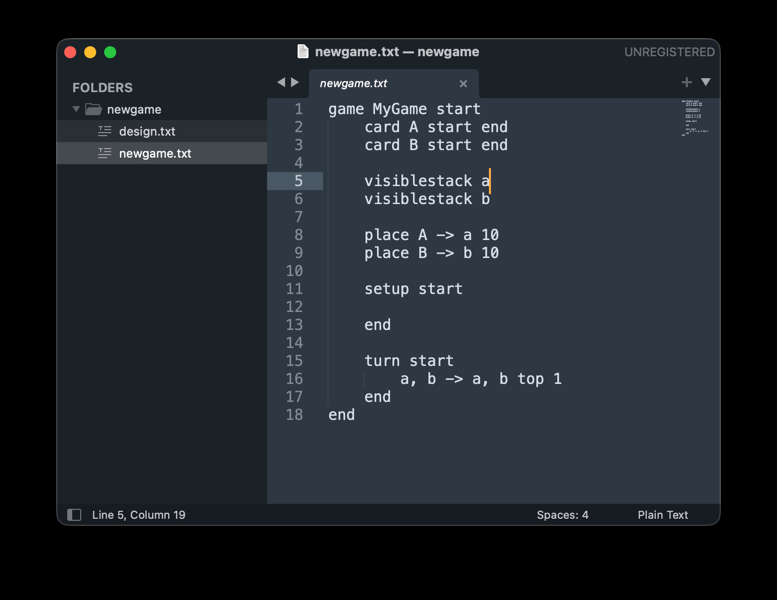
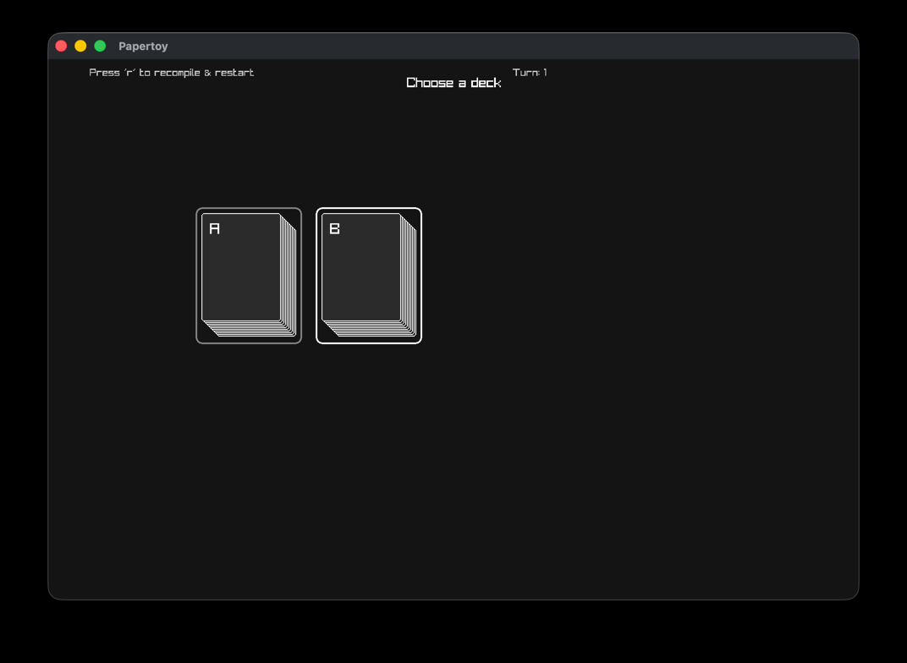

A Papertoy project is made up of two main files, a code file, and a design file.
You only need to create the code file. So open up your favourite text editor and create a .txt file named anything you like!
Hint! It's better to use a code editor like notepad++, sublime text, or VSCode than something like Microsoft Word or Open Office
Hint! It's best to create a new folder for your project, so you can put all your project files in once place.
When you've created the file, paste the following code into the editor:
game MyGame start
card A start
end
card B start
end
visiblestack a
visiblestack b
place A -> a 10
place B -> b 10
setup start
end
turn start
a, b -> a, b top 1
end
end
This code creates two kinds of cards, A & B, neither have any attributes like suit or points or attack. It then creates two face up stacks a & b, and places 10 of card A into stack a, and 10 of card B into stack b
Then, every turn it lets the player move the top card from either a or b, to either a or b.
It's not really a 'game' but it's enough to get us going for now.
Now lets load this code up in the engine!
When you first open up the engine, you'll see the menu screen

Click the load button and navigate to the folder where your project is. Press the 'up' button to move up a directory, and click on a folder to open that folder. If you have the full path to the folder on your clipboard, you can click that 'paste from clipboard' button to go straight there.
When you find your new file, select it and press the 'load' button.

The first time you load up a project in papertoy, it creates a design file for you:

This file will be blank at first, but once you start customising the look of the game using the design tool, this file will start to fill up.
If all you see when you load the game is a blank screen (But no red error text), press the 'r' button.
If you do see red error text in the top left of the screen, it means that you've not copied the code from this guide correctly. Try pasting it again, and reload the game.
You can go back to the main menu by pressing the 'esc' key on your keyboard

And that's it! Next, we'll customise the design in the designer section!
Also why don't you see if you can work out what the code does by playing around with the project you just created!